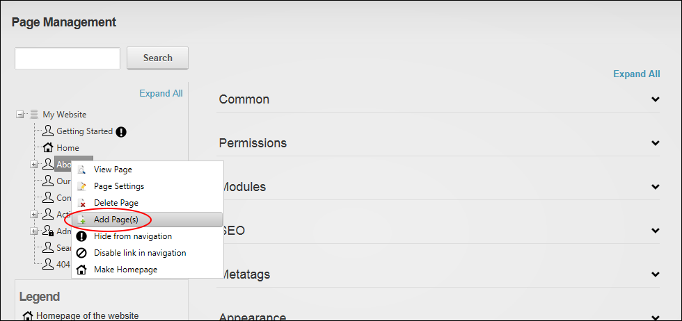
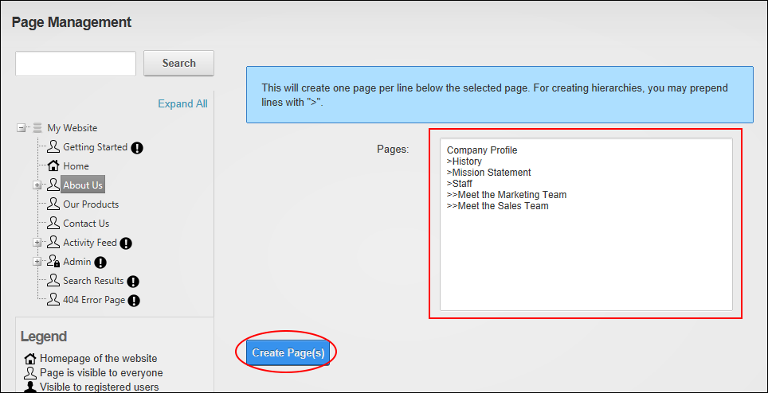

Adding One or More Pages
How to add one or more new pages to a site using the Pages module.
- Navigate to Admin >
 Page Management - OR - Go to a Pages modules.
Page Management - OR - Go to a Pages modules.
- In the left-hand navigation tree, right-click on a page name and then select Add Page(s) from the drop down list.

- In the Pages multi-line text box, enter each page name on a separate line. If you wish to create a page hierarchy, simply add one right chevron characters ( > ) for each child level.
- Click the Create Page(s) button.

- The new pages are now added to the site menu, the Pages module navigation tree.